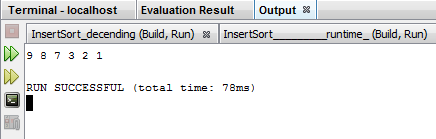
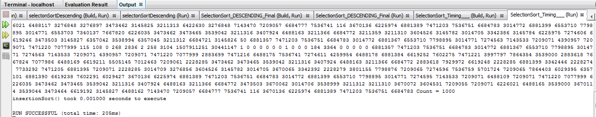
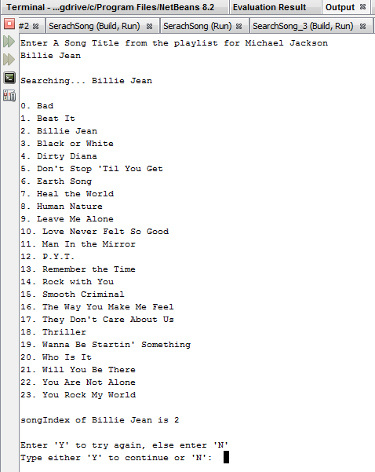
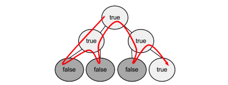

Design and Analysis of Algorithms
Dong Myeong Seo
1 1 – Algorithms and Data Structure. 4
1.1 Requirement 4
1.2.1 Selection Sort 4
1.3.1 Complexity. 9
1.4.1 Time Complexity for Selection sort 10
2.1 Requirement 13
2.2.1 Divide-and-Conquer Search. 13
2.2.2 Test 1 – Divide given string array into 3. 14
2.2.3 Test 2 – Divide given string array into 2. 17
2.3 Assignment Part 2 – Time Complexity. 21
2.3.1 Time Complexity for Assignment Part 1. 21
2.3.2 Time Complexity Comparison. 21
3.1 Requirement 23
3.2 Assignment Part 1 – Pseudocode. 23
3.2.1 Problem.. 23
3.2.2 Pseudocode. 24
3.3 Assignment Part 2 – Optimality. 26
3.4 Assignment Part 3 – Time Complexity Comparison. 27
4.1 Requirement 28
4.2 Assignment Part 1 – Pseudocode. 28
4.2.1 Problem.. 28
4.2.2 Pseudocode. 29
4.3 Assignment Part 2 - Optimality. 32
5 5 – State Space Traversal & Heuristics. 33
5.1 Requirement 33
5.2 State Space. 33
5.3 Traversal Time Complexity. 34
5.5 Pseudocode. 37
You currently work in an algorithm development group for a large multimedia, mobile device corporation. Your group has been tasked with creating an app that will play an audio file backward (from end to beginning rather than the standard beginning to end). Because this app is likely to be used on a mobile device, your group figures that this algorithm should use as little memory and space as possible. Your group has therefore decided to construct this reversal order algorithm such that it is an "in-place" algorithm. This simply means that the audio file will be loaded to memory and reversed using the same memory locations (because you must use memory sparingly).
The code below which is written using C is making use of Insert sort with the descending order.
Before attempting this implementation, you choose to develop a simple prototype version of this algorithm in C++. Specifically, you will build an in-place, order reversal algorithm. This algorithm will take as an input an array of ints and will reverse the order of the elements in the array, in place (essentially using only the memory in the array). For example, if the array contains five elements [1,2,3,4,5], the output of the algorithm will be [5,4,3,2,1]. Comment your program.
According to Tang, the Selection sort is an in-place comparison sort (Tang, 2016). Hence, it has O(n2) complexity.
/*
* File: main.cpp
* Author: doseo
*
* Created on July 12, 2017, 4:02 PM
*/
#include <cstdlib>
#include <stdio.h>
// Simplified code without calling sub-function to using selection sort
//
int main(void)
{
int i=0, j=0, temp; //Declare and Initialize variables
int array[] = {3, 6, 1, 8, 4, 5}; //Declare and Initialize array with 6 elements
int n = sizeof(array)/sizeof(array[0]); //The size of array
for (j=0 ; j<(n-1) ; j++) //Start with 0 and increment j
{
for (i=0 ; i<(n-1) ; i++) //Inner loop, increase i
{
if (array[i+1] < array[i]) //Swap
{
temp = array[i]; //Temp is sorted array
array[i] = array[i + 1];
array[i + 1] = temp;
}
}
}
printf ("\n Output -------------------- \n");
for (i=n ; i>0 ; i--) //to write descending order
{
printf (" %d", array[i-1]);
}
return 0;
}
Output:
Note that above code is written in C not C++ because my NETBEAN IDE 8.2 does not work correctly for below code which is written in C++.
/*
* File: main.cpp
* Author: doseo
*
* Created on July 12, 2017, 3:01 PM
*/
#include<iostream>
#include<conio.h>
using namespace std;
void display(int b[]);
int main()
{
int array[]={2,3,6,8,9,0,1,4,7,2};
int large,index;
cout<<"Numbers before SELECTION SORT\n";
display(array);
for(int i=9;i>0;i--)
{
large=array[9];
index=0;
for(int j=1;j<=i;j++)
{
if(array[j]>large)
{
large=array[j];
index=j;
}
array[index]=array[i];
array[i]=large;
}
}
cout<<"\nNumbers after SELECTION SORT\n";
display(array);
getch();
return(0);
}
void display(int b[])
{
for(int i=0;i<10;i++)
{
cout<<b[i]<<" ";
}
}
And InsertionSort() is tried only to find out that Insert sort is not in-place comparison (Tang, 2016).
* Created on July 10, 2017, 7:52 PM
*/
// C program for insertion sort - like a playing card but this time it sorts descending order.
#include <stdio.h>
#include <math.h>
/* C Function to sort an array using insertion sort - function insertionSort ()*/
void insertionSort(int array[], int n)
{
int i, j, temp; // Declare variables to use
for(j = 1; j < n ; j++) // Start with 1 (not 0)
{
temp = array[j]; // Assign temp with array
for(i = j - 1; (i >= 0) && (array[i] < temp); i--) // Smaller values move up
{
array[i+1] = array[i];
}
array[i+1] = temp; //Put key into its proper location
}
return;
}
// Optional - To show the output of an array of size 6
void printArray(int array[], int n)
{
int i;
for (i=0; i < n; i++)
printf("%d ", array[i]);
printf("\n");
}
/* Driver program to test insertion sort */
int main()
{
int array[] = {8, 7, 9, 3, 1, 2}; /* define array */
int n = sizeof(array)/sizeof(array[0]);
insertionSort(array, n);
printArray(array, n);
return 0;
}
Output:

Using this prototype, you will analyze the time complexity and space complexity of your algorithm in the worst case. Specifically, for time complexity, count the number of steps for each line of code, and write down the total lines executed as a mathematical expression where n is the size of the input array. For space complexity, write an expression for the number of memory locations and components that are required for the algorithm in the worst case. (Assume that each int is one location.)
Below is complexity computed based on the input array {3, 6, 1, 8, 4, 5},

| Index | 0 | 1 | 2 | 3 | 4 | 5 |
|---|---|---|---|---|---|---|
| Input Array | 3 | 6 | 1 | 8 | 4 | 5 |
| After 1st pass | 8 | 3 | 6 | 1 | 4 | 5 |
| After 2nd pass | 8 | 6 | 3 | 1 | 4 | 5 |
| After 3rd pass | 8 | 6 | 5 | 3 | 1 | 4 |
| After 4th pass | 8 | 6 | 5 | 4 | 3 | 1 |
| After 5th pass | 8 | 6 | 5 | 4 | 3 | 1 |
So time complexity is computed based on (n−1)+(n−2)+⋯+(2)+(1)=n(n−1)2∈O(n^2) when n is bigger this value reaches n^2 ).
Hence the Selection sort algorithm for array sort meets the basic requirement for this assignment.
According to Big-O complexity chart,

The complexity can be represented as depicted above (Eric, et al., n.d.).
Program a function, method or class that will track the true runtime of your algorithm. Find the true runtime of your algorithm using arrays of varying sizes (e.g., n = 500, n = 1,500, and n= 2,500) using your new tool. The plot, on a Cartesian plane, the runtime of your algorithm as a function of the size of the input array, n.
#include <stdio.h>
#include <math.h>
#include <time.h>
/* C Function to sort an array using insertion sort*/
// Simplified code without calling sub-function to using selection sort
//
int selecionSort(int array[], int n)
{
int i=0, j=0, temp; //Declare and Initialize variables
// int array[] = {3, 6, 1, 8, 4, 5}; //Declare and Initialize array with 6 elements
// int n = sizeof(array)/sizeof(array[0]); //The size of array
for (j=0 ; j<(n-1) ; j++) //Start with 0 and increment j
{
for (i=0 ; i<(n-1) ; i++) //Inner loop, increase i
{
if (array[i+1] < array[i]) //Swap
{
temp = array[i]; //Temp is sorted array
array[i] = array[i + 1];
array[i + 1] = temp;
}
}
}
printf ("\n Output -------------------- \n");
for (i=n ; i>0 ; i--) //to write descending order
{
printf (" %d", array[i-1]);
}
return;
}
// To show the output of an array of size 6
void printArray(int array[], int n)
{
int i;
for (i=0; i < n; i++)
printf("%d ", array[i]);
printf("Count = %d ", i);
printf("\n");
}
// The main program calls fun() and measures time taken by insertionSort()
int main()
{
// Calculate the time taken by insertionSort()
clock_t t;
t = clock();
int input[] = {3, 6, 1, 8, 4, 5}; /* define array */
int n = 1000;
void selectionSort(input, n);
printArray(input, n);
t = clock() - t;
double time_taken = ((double)t)/CLOCKS_PER_SEC; // in seconds
printf("insertionSort() took %f seconds to execute \n", time_taken);
return 0;
}
Output:


| n | Time (second) |
|---|---|
| 1000 | 0.001 |
| 1500 | 0.001 |
| 2000 | 0.001 |
| 2500 | 0.145 |
| 3000 | 0.416 |
| 3500 |
Possibly, above outcome can be represented as below,

Your company has been researching ways to improve the efficiency the mobile devices that it produces. Your group is tasked with finding a way to reduce media retrieval time from a playlist that is in alphabetical order. Your Algorithm Group has recently been reviewing the divide-and-conquer paradigm and has decided to test a divide and conquer approach.
In C++, code a search algorithm that searches a list of strings for a particular song. The searching algorithm will have two inputs: the playlist, which is a string array that contains a list of songs in alphabetical order; and a particular song, which is a string. If the song is found in the list, the algorithm will return the index of the song, and it will return -1 otherwise.
This searching algorithm will employ a divide-and-conquer approach similar to that in binary search, but with a slight variation. In binary search, a list is split into 2 sublists during each step; however, for your assignment, you will build and algorithm that splits the list into 3 sublists during each step.
Commonly, binary search is one of the simplest and best-known search algorithms. When there is predetermined set numbers, which allow us to determine whether a given query number is in the set or not.
This algorithm can be fulfilled, firstly, sort the table, then for any query number, look in the middle and search for left half. If the query number is not in there, then look into other half in the table or array (Sedgewick, 2013).
Possible pseudo code can be (when we divide it into two),
public static int search(int key, int lo, int hi)
{
if (lo > hi) return -1;
int mid = lo + (hi - lo) / 2;
if (key < a[mid])
return search(key, lo, mid - 1);
else if (key > a[mid])
return search(key, mid + 1, hi);
else return mid;
}
Here I performed two search routine using this pseudo code; the first one is dividing the array into 3 and the second one splits it into two,
/* Break In Code */
/*
* File: main.cpp
* Author: doseo
*
* Created on July 19, 2017, 6:20 AM
*/
#include <cstdlib>
#include <iostream>
#include <string>
using namespace std;
int searchSong(string playList[], int arraySize, string songTitle, int songIndex){
for (int i = 0; i < arraySize; i++){
cout << i << ". " << playList[i] << endl; /* To print out the play list of Michael Jackson's */
}
int start = 0; /* The 1st third */
int stop = arraySize - 1;
int position1 = start + (stop - start + 1)/3; /* The 2nd third */
int position2 = stop - start; /* The last Third; or, start + 2*(stop - start + 1)/3 */
songIndex = -1; /* Initialize songIndex */
while(start < stop && songIndex == -1){
if ( (playList[start] <= songTitle) && (songTitle < playList[position1]) ) /* 1st division */
{
for(int i = start; i < stop; i++)
{
if(playList[i] == songTitle)
{
songIndex = i;
return songIndex;
}
}
}
else if ( (playList[position1] <= songTitle) && (songTitle < playList[position2]) ) /* 2nd division */
{
for(int i = start; i < stop; i++)
{
if(playList[i] == songTitle)
{
songIndex = i;
return songIndex;
}
}
}
else if ( (playList[position2] <= songTitle) && (songTitle < playList[arraySize]) ) /* 3rd division */
{
for(int i = start; i < stop; i++)
{
if(playList[i] == songTitle)
{
songIndex = i;
return songIndex;
}
}
}
else
{
songIndex = -1;
return songIndex;
}
}
}
int main(int argc, char** argv) {
char ans;
do {
string playList[] = {
"Bad",
"Beat It",
"Billie Jean",
"Black or White",
"Dirty Diana",
"Don't Stop 'Til You Get",
"Earth Song",
"Heal the World",
"Human Nature",
"Leave Me Alone",
"Love Never Felt So Good",
"Man In the Mirror",
"P.Y.T.",
"Remember the Time",
"Rock with You",
"Smooth Criminal",
"The Way You Make Me Feel",
"They Don't Care About Us",
"Thriller",
"Wanna Be Startin' Something",
"Who Is It",
"Will You Be There",
"You Are Not Alone",
"You Rock My World"};
int arraySize = sizeof(playList)/sizeof(string);
string songTitle;
cout << "Enter A Song Title from the playlist for Michael Jackson " << endl;
getline (cin, songTitle);
cout << endl;
cout << "Searching... " + songTitle << endl << endl;
int songIndex = searchSong(playList, arraySize, songTitle, songIndex);
cout << endl;
cout << "songIndex of " << songTitle << " is " << songIndex << endl << endl;
cout << "Enter 'Y' to try again, else enter 'N' " << endl;
cout << "Type either 'Y' to continue or 'N': ";
cin >> ans; //unobserved trailing /n acting as "enter key strike"
cin.ignore();
} while ((ans == 'Y') || (ans == 'y'));
}
*** Break In Code ***
Output:

: The first third, the second third, and the last were returned as coded.
/* Break In Code */
/*
* File: main.cpp
* Author: doseo
*
* Created on July 14, 2017, 5:59 PM
*/
#include <cstdlib>
#include <iostream>
#include <string>
using namespace std;
int searchSong(string playList[], int arraySize, string songTitle, int songIndex){
for (int i = 0; i < arraySize; i++){
cout << i << ". " << playList[i] << endl; /* To print out available play list */
}
int start = 0; /* Start Index */
int stop = arraySize - 1; /* End of string */
int position = stop - start; /* To set mid-point in string array, which can be (start + stop)/2 */
songIndex = -1; /* Initialize songIndex */
while(start < stop && songIndex == -1){
if ( (playList[start] <= songTitle) && (songTitle < playList[position]) ) /* The 1st half */
{
for(int i = start; i < stop; i++)
{
if(playList[i] == songTitle)
{
songIndex = i;
return songIndex;
}
}
}
else if ( (playList[position] <= songTitle) && (songTitle < playList[arraySize]) ) /* the second half */
{
for(int i = start; i < stop; i++)
{
if(playList[i] == songTitle)
{
songIndex = i;
return songIndex;
}
}
}
else /* To handle illegal value and exit the function */
{
songIndex = -1;
return songIndex;
}
}
}
int main(int argc, char** argv) {
char ans;
do {
string playList[] = {
"Bad",
"Beat It",
"Billie Jean",
"Black or White",
"Dirty Diana",
"Don't Stop 'Til You Get",
"Earth Song",
"Heal the World",
"Human Nature",
"Leave Me Alone",
"Love Never Felt So Good",
"Man In the Mirror",
"P.Y.T.",
"Remember the Time",
"Rock with You",
"Smooth Criminal",
"The Way You Make Me Feel",
"They Don't Care About Us",
"Thriller",
"Wanna Be Startin' Something",
"Who Is It",
"Will You Be There",
"You Are Not Alone",
"You Rock My World"};
int arraySize = sizeof(playList)/sizeof(string);
string songTitle;
cout << " Enter A Song Title from the playlist for Michael Jackson " << endl;
getline (cin, songTitle);
cout << endl;
cout << "Searching ..." + songTitle << endl << endl;
int songIndex = searchSong(playList, arraySize, songTitle, songIndex);
cout << endl;
cout << "songIndex of " << songTitle << " is " << songIndex << endl << endl;
cout << "Enter 'Y' to try again, otherwise enter 'N'" << endl;
cout << "Type either 'Y' to continue or 'N' :";
cin >> ans; //unobserved trailing /n acting as "enter key strike"
cin.ignore();
} while ((ans == 'Y') || (ans == 'y'));
}
*** Break In Code ***
The output for a song from the 1st half and 2nd half,


The complexity of an algorithm is a measure of the amount of time and/or space required by an algorithm for an input of a given size (n). In analyzing an algorithm, through code and practice, we can predict the number of times “the principle activity” of a certain algorithm is performed (University of Glasgow, n.d.).
From the assignment Part 1, we have reviewed the possible implementation of divide-and-conquer search mechanism which is adopted from binary search in general. The first example divides given string array into three parts, and the second example splits it into 2. So the time complexity has to be O(log3N) and O(log2N) respectively. However, Big O does not deal with constant factors, so Logx(n) and Logy(n) are treated same because Big-O isn't concerned with the slope of the curve on the graph, only with the shape of the curve (StackOverflow, n.d.). So for the given array size 24, Log3(24) is about 2.89278926071 whereas Log2(24) yields 4.58496250072.
To answer “how does this time complexity compare to the time complexity of binary search (in terms of Big-O),” which can be represented as Table 1 below,
Table 1
Time Complexities of Binary Search Algorithm (Hackerearth, n.d.).

| Algorithm | Time Complexity | ||
|---|---|---|---|
| Best | Average | Worst | |
| Binary Search | Ω(1) | θ(log2(n)) | O(log2(n)) |
| Modified Serarch | Ω(1) | θ(log3(n)) | O(log3(n)) |
Note: Big-O, Little-o, Omega Ω, and Theta Θ are formal notational methods for stating the growth of resource needs (efficiency and storage) of an algorithm (gitbooks, n.d.).
Since binary search is one of linear search, the worst case of binary search is when the value to search is not in the set of string array for this case study because the algorithm needs performing the maximum number of recursive call (Western University, n.d.). However generally constant terms are ignored. So in expression, which represents O(log n).
The multimedia/mobile company you work for is currently attempting to transfer large media files from older disks to newer disks (on various servers). The task of simply copying over all of these files in any haphazard order is fairly straightforward; however, you believe that you can improve upon a haphazard approach and hope to improve the efficiency of storage space on the new disks. You have a collection of m disks, but you believe that if you smartly organize the media files onto the disks, you may not need to use all m disks.
You plan to design a greedy algorithm to efficiently transfer media to storage devices. Note that this is an optimization problem. Optimization problems have a general structure and consist of some quantity to be maximized or minimized under some list of constraints. In this problem, you have n files (f1, ..., fn) with corresponding sizes (in MBs) s1, ... sn. Your goal is to store these files onto m disks, d1, ..., dm, that have corresponding storages amounts t1, ..., tm. Note that one file cannot be spread across multiple disks. In this problem, the goal is to minimize the amount of storage that is not used on each disk (that is used). This should also minimize the total number of number of disks being used. That is, you would like to fill up each disk as much as possible while leaving a minimally small amount of unused storage. (In the perfect case, each disk would be perfectly filled, and there would be no unused storage.) If there are any disks left unused, you will be able to return them for a refund.
Design a greedy algorithm using pseudocode that solves this optimization problem of transferring files to disk while minimizing unused storage. The inputs to this algorithm are the number of files n, corresponding sizes (in MBs) s1, ... sn, m the number of disks, and corresponding storages amount t1, ..., tm. The algorithm should return an array map[i] which contains the disk index of which the ith media file should be stored.
An optimisation problem involves finding a subset, S, from a collection of candidates, C; the subset, S, must satisfy some specified criteria (University of Liverpool, n.d.). Same can be represented as below,
function select (C : candidate_set) return candidate;
function solution (S : candidate_set) return boolean;
function feasible (S : candidate_set) return boolean;
--***************************************************
function greedy (C : candidate_set) return candidate_set is
x : candidate;
S : candidate_set;
begin
S := {};
while (not solution(S)) and C /= {} loop
x := select( C );
C := C - {x};
if feasible( S union {x} ) then
S := S union { x };
end if;
end loop;
if solution( S ) then
return S;
else
return es;
end if;
Supposing that the source and target are unsorted arrays as below Table 1,
Table 1 – Unsorted Array for Both Source File and Target Disk

| i | 1 | 2 | … | n/m |
|---|---|---|---|---|
| source | file(1) = f3 s(3) | file(2) f1 (s1) | … | fn (sn) |
| target | disk(1) d2 (t2) | disk(2) d3 (t3) | … | dm (tm) |
Note: These are an array of values which are not sorted by the size of the source file and the amount of target disk.
Before we deal with pseudocode of a greedy algorithm, it is meaningful to review heapsort because this file transfer problem is about to make use of it. Heapsort is based on usage of the binary heap – data structure which acts as a priority queue. If we insert all elements of the array into the priority queue, the operation poll will always return (and remove) the element of the heap, which has the highest priority. If we use poll operation n times, we will obtain list of sorted elements. Meaning that in heapsort the unsorted elements will first be put into a heap structure, then if array needs to be sorted in descending order an ascending heap structure is to be used.
Simple steps for heapsort can be,
Now to copy files to disks,
Table 2 – Sorted Array for Both Source File and Target Disk

| i | 1 | 2 | … | n/m |
|---|---|---|---|---|
| source | file(2) = f1 s(1) | file(1) f3 (s3) | … | fn (sn) |
| target | disk(2) d3 (t3) | disk(3) d2 (t2) | … | dm (tm) |
Note: in case s1 is greater than the capacity of d1, s1 can’t be copied.
for (i = 0; i < n; i++) // To check from the biggest source file
{
for(j=0;j<=m; j++) // To check the capacity of disk
{
if (disk[j].capacity < file[i].size)
continue to find till it find disk with enough capacity
else
copy the file, and reduce the disk storage amount by the file size. Then move to the next file // map[the original index of file[i]] = the original index of disk[j]
}
}
Or, above routine can be presented as below,
Possibly, continuous storing file to the disk can be an optimal solution using recursive routine. In other words, store each possible mapping of a file to the disk recursively. However, the greedy algorithm does not guarantee the entire problem to be optimal. So above algorithm is to demonstrate the shortest and quickest checking the files and disks.
The time complexity for this instance can be O(mn + n log n) because both files and disks are sorted using heapsort, and iterate over all files, and each file iterates a tree of disks where the height of the tree is log(number of nodes).
The brute force algorithm consists in checking, at all positions in the text between 0 and n-m, whether an occurrence of the pattern starts there or not. Then, after each attempt, it shifts the pattern by exactly one position to the right. So during the searching phase, the text character comparisons can be done in any order. The time complexity of this searching phase is O(m*n) where the number of files is n and the number of disks is m (Universite Paris-Est Marne-La-Vallee, n.d.). There is no sorting, no tree, but only two nested loops. So commonly pseudocode for Brute Force Algorithm can be,
void BF(char *x, int m, char *y, int n) {
int i, j;
/* Searching */
for (j = 0; j <= n - m; ++j) {
for (i = 0; i < m && x[i] == y[i + j]; ++i);
if (i >= m)
OUTPUT(j);
}
}
Your algorithms group has been tasked with creating an app that performs special operations on images. Specifically, your app will compare one black-and-white image into another black-and-white image. There are a number of methods that can be used to perform this task, but your group has agreed that using dynamic programming is a fast and elegant scheme to solve this problem.
Design an algorithm (using pseudocode) that takes in as an input, two 2-D int arrays that are assumed to be 2 black-and-white images: initialImage x, whose dimensions are IxJ, and finalImage y, whose dimensions are IxK. The algorithm will compare x to the y, row-by-row, as defined below. Your algorithm will employ a dynamic programming scheme to compare X to Y identifying the minimal difference between each row.
Because you are working with black-and-white images only, you should assume that each image is a 2-D int array consisting of 2 possible values: 0 or 1, where 0 represents black and 1 represents white. Thus, this 2-D grid of 0 and 1 values comprise a 2-D black-and-white image. Each row of this image is then simply a 1-D int array filled with either 0s or 1s. Therefore, you must define how you will measure the difference between the strings of 0s and 1s in each row.
Remember that you will do the comparison one row in the images at a time.
First, compare X1,* to Y1,*. (Here X1,* is the first row in image X and Y1,* is the first row in image Y ). Next, compare X2 to Y2... Each one of these comparisons will require the construction of a D (distance) matrix.
In the following example, the first row of X is X1,*, and the first row of Y is Y1,* = 00110.

Use the following recurrence relation to develop your pseudocode:

After the D matrix is completed, the minimum number in the bottom row is the minimal mismatch for this row. You will assign this value to the variable minVali. This number tells how different row X1,* is from row Y1,* . You will then repeat this comparison for all rows i and aggregate the difference when complete into variable totalDifference = ∑ minVali.
As a result, the algorithm will compare the total difference to a threshold value called thresh. If total value is above the threshold, the images are declared different; otherwise, they are declared to be similar images. You can assume that the thresh variable is supplied as an input to your algorithm.
Design pseudocode for the image comparison algorithm discussed above, given input Images X, Y, and thresh. The output is a declaration: The images are similar, or The images are different.
Before moving on to the multiple rows, the distance in a single row can be written as below,
int d[6][6]; // define character array with termination character
#define min(x,y) ((x) < (y) ? (x) : (y)) // define min() to get smaller number
int main()
{
int i,j,k,temp,tracker; // additional int temp and tracker are defined
char x[] = "11001"; // j[] – columns from table X (Row 2 is used for easier representation )
char y[] = "01101"; // k[] – columns from table Y
k = strlen(x); // for this instance, assumed both j and k have same length
for(i=0;i<=k;i++)
d[0][i] = i; // iterate
for(j=0;j<=k;j++)
d[j][0] = j;
for (j=1;j<=k;j++) // based on target y
{
for(i=1;i<=k;i++)
{
if(x[i-1] == y[j-1])
{
tracker = 0;
}
else
{
tracker = 1;
}
temp = min((d[i-1][j]+1),(d[i][j-1]+1)); // save off min value
d[i][j] = min(temp,(d[i-1][j-1]+tracker)); // compare it with temp
}
}
printf(" minVali %d\n",d[k][k]); // for this example, k is 5
return 0;
}
The d[k][k] = minVali will be 0, 2, 1 respectively. Hence, totalDifference = ∑ minVali = 0 + 2 +1. If thres is 2 the image X and Y are different.
Now we are checking the distance between the table X and Y row by row basis. So possible pseudocode for dynamic programming can be,
#define min(x,y) ((x) < (y) ? (x) : (y)) // min() function
int d[6][6];
int MAX_COLUMNS = 6; // the length of string + 1
void compabImage(int x[][], int y[][], int thresh){ //2-D Array for X and Y, threshold value as input
int i, j, k, a, b, c;
int d[j][k]; // string (character array for x and y for each row - [6][6]
int totalDifference =0; // SUM of individual rows
for(int r=0 ; r<i ;r++){ // to iterate all rows i for x and y
for(int a=0 ;a < j ;a++) // to iterate all column in X (a string)
{
for(int b=0 ; b < k ;b++) // to iterate all columns in y
{
d[a][b]=6; // based on sample table x and y (or strlen for each string)
if((a-1)>=0 && (b-1)>=0)
{
if(x[r][a]==y[r][b]]) // Compare values - when x and y has same value
{
d[a][b] = d[a-1][b-1]; // no change 0
}
else
{
d[a][b] = d[a-1][b-1]+1; // 1
}
}
if(a-1 >= 0)
{
d[a][b] = min(d[a][b],d[a-1][b]+1); // Compare it with previous 2-D value
}
if(b-1 >= 0)
{
d[a][b] = min(d[a][b],d[a][b-1]+1);
}
}
}
int minVali =6;
for(int c=0 ; c < k ; c++)
{
minVali =min(d[j-1][c],minVali);
}
totalDifference += minVali ;
}
if(totalDifference >thresh)
{
printf("different");
}
else
{
printf("similar");
}
}
The Basic idea of optimality in the dynamic programming is that we can use optimal solutions to the smaller subproblems so long as it yields the optimal solutions to the larger ones. Unlike divide-and-conquer (as in mergesort or quicksort) it is OK if our subproblems overlap, so long as there are not too many of them (Carnegie Mellon University, n.d.). To compare the similarity of given image from above example, we solved subproblems row by row basis by comparing one string from X with another string from Y; then we move it to all given rows. Furthermore, we could prevent recursive search by storing the immediate comparison outcome into 2 dimensional array d[][].
So we conclude that the time complexity for this pseudocode has to be O (i*j*k) which are the number of rows, the number of columns in X, and the number of columns in Y respectively.
Your team is requested to design an application using the design of an artificial intelligence agent, to solve a Sudoku game, given any starting state of the game. The goal of Sudoku is to fill in a 9×9 grid with digits so that each column, row, and 3×3 section contain the numbers between 1 to 9 (Sudoku, n.d.). To solve Sudoku, we commonly adopt three different algorithms: backtrack, rule-based, and Boltzmann machine (Berggren & Nilsson, n.d.).
Here I am going to make use of backtracking algorithm to solve Sudoku program because multiple case study reads that this algorithm performs fairly well along with rule-based algorithm (Ekne & Bylleus, 2015). To solve the problem here, I need to familiar with the rule and constraint in Sudoku game itself. Based on the rule given, the goal has to be,
So a starting state is a partially filled 9x9 2-dimensional array where sub-grid 3 to 5 pre-set integer values as below,

| 1 | 2 | 3 | 4 | 5 | 6 | 7 | 8 | 9 | |
|---|---|---|---|---|---|---|---|---|---|
| 1 | 2 | 4 | 8 | 1 | |||||
| 2 | 4 | 8 | 2 | 6 | 3 | ||||
| 3 | 3 | 1 | 6 | 4 | |||||
| 4 | 1 | 4 | 5 | 8 | |||||
| 5 | 6 | 3 | 5 | 8 | 2 | 4,9 | 7 | ||
| 6 | 2 | 5 | 9 | 1 | |||||
| 7 | 9 | 1 | 7 | 4 | |||||
| 8 | 6 | 8 | 7 | 1 | |||||
| 9 | 8 | 4 | 3 | 5 |
Based on this starting status and given a rule, the total number of cells or n elements is 9x9 = 81. In other words, incomplete n^2 x n^2 with n x n subgrids (NP-complete problems). So to solve the problem, construct for each empty cell (x,y) a list Lxy of compatible digits. For this example, cell (5, 7) with L57 = {4, 9}. Then order it cardinally on lists. So the value assigned will be cardinality 1, and the list of value is 2 then cardinality is 2 and so on, which can be described as a tree. This is true since backtracking is also known as depth first search, we may look at the strings as nodes of a tree. So generating strings in dictionary order constitutes a tree traversal that systematically eliminates subtrees and moves down and backs up along branches (Chi & Lange, 2012).
Commonly it is easy to find the time complexity using pseudocode, which pseudocode for brute force can be,
boolean solve() :=
x = 0, y = 0
for x,y in grid:
if grid[x][y].value == 0
found = true
break
if !(found)
return valid()
candidates = boolean[10]
for i := 0 -> 9:
candidates[grid[x][i].value] = true
candidates[grid[i][y].value] = true
for (cells in same box as cell x,y):
candidates[cell.value] = true
for j := 1 -> 9:
if !(candidates[j]):
grid[x][y].value = j
if solve()
return true
grid[x][y].value
So the complexity for above pseudocode has to be O(n^2) because it generates all possible configurations of numbers from 1 through 9 to fill the empty cell. So it tries every configuration one by one until the correct configuration is found.
Based on given status, possible numbers can be,

| 1 | 2 | 3 | 4 | 5 | 6 | 7 | 8 | 9 | |
|---|---|---|---|---|---|---|---|---|---|
| 1 | 57 | 579 | 3679 | 2 | 356 | 4 | 8 | 1 | 59 |
| 2 | 57 | 4 | 179 | 9 | 579 | 8 | 2 | 6 | 3 |
| 3 | 3 | 25789 | 2789 | 1 | 6 | 579 | 9 | 79 | 4 |
| 4 | 1 | 679 | 679 | 39 | 4 | 67 | 5 | 8 | 2689 |
| 5 | 6 | 3 | 5 | 8 | 2 | 1 | 49 | 9 | 7 |
| 6 | 2 | 78 | 478 | 5 | 9 | 67 | 1 | 38 | 68 |
| 7 | 9 | 1 | 236 | 7 | 15 | 256 | 368 | 4 | 268 |
| 8 | 45 | 25 | 234 | 6 | 8 | 259 | 7 | 2 | 1 |
| 9 | 8 | 267 | 267 | 4 | 1 | 3 | 69 | 5 | 269 |
Note: candidate p is written in size 8 fonts above. The cardinality is 1 through 5 which can be represented as a tree.
A heuristic search method is a depth first search as complete solutions must be created before testing. It is often called the British Museum method as it is like looking for an exhibit at random. A heuristic is needed to sharpen up the search. Consider the problem of four 6-sided cubes, and each side of the cube is painted in one of four colors. The four cubes are placed next to one another, and the problem lies in arranging them so that the four available colors are displayed whichever way the 4 cubes are viewed. The problem can only be solved if there are at least four sides colored in each color and the number of options tested can be reduced using heuristics if the most popular color is hidden by the adjacent cube (Cardiff University, n.d.). So possibly backtracking algorithm can enhance the performance of search, which checks whether it is safe to assign before assigning integer into an empty cell. So simply check same numbers which are not present in the current row, current column and current 3x3 sub-grid. At once safety is checked, assign the number, and recursively check whether this assignment leads to a solution or not (GeeksforGeeks, n.d.).
Based on the candidate made above,
L62 78
L63 478
L33 2789
L32 25789
This example does not branch out (the state-status I made was a simple example), but it gives some good idea how it fails to grow based on vertex set. Same can be simplified as below (Henrik & Viktor, n.d),

For backtracking implementation, set initial status with given numbers in Sudoku template (9x9). Then initialize the 2-D array with 81 empty grids(nx=9,ny=9). Next, fill in some available empty grid with the known values and make an original copy of the array.
Algorithm
Find row, col of an unassigned cell --- so each row and columns have candidate
If there is none, return true
For digits from 1 to 9 --- available digits for columns and rows
assign digit to row, col and recursively try fill in rest of grid
If all digits have been tried and nothing worked, return false
Pseudocode
Start from top left grid(nx=0,ny=0), check if grid is empty
if (grid is empty)
assign the empty grid with values (i)
if (no numbers exist in same rows & same columns same as
(i) & 3x3 zone (i) is currently in)
fill in the number
if (numbers exists in same rows & same columns same as
(i) & 3x3 zone (i) is currently in)
discard (i) and try other values (i++)
}else{
while (nx<9){
Proceed to next row grid(nx++,ny)
if (nx equal 9){
reset nx = 1
proceed to next column grid(nx,ny++)
if (any equal 9){
print solutions}}}
C++ Implementation and output
#include <cstdlib>
#include <stdio.h>
using namespace std;
#define UNASSIGNED 0 // Or, a space
#define n 9 // total number of row and column (x,y)
bool IsUnassignedCell(int grid[n][n], int &row, int &col);
bool testValueSafety(int grid[n][n], int row, int col, int num); // Sudoku rule
/* Function to solve given puzzle */
bool backTracking(int grid[n][n])
{
int row, col;
if (!IsUnassignedCell(grid, row, col)) // if assigned cell
return 1; // because return value boolean
for (int num = 1; num <= 9; num++) // Iterate 1 through 9
{
if (testValueSafety(grid, row, col, num)) // test value by assigning one
{
grid[row][col] = num; // Try
if (backTracking(grid))
return 1;
grid[row][col] = UNASSIGNED; // To try again = 0
}
}
return 0;
}
bool IsUnassignedCell(int grid[n][n], int &row, int &col)
{
for (row = 0; row < n; row++)
for (col = 0; col < n; col++)
if (grid[row][col] == UNASSIGNED)
return 1;
return 0;
}
bool checkRow(int grid[n][n], int row, int num)
{
for (int col = 0; col < n; col++)
if (grid[row][col] == num)
return 1;
return 0;
}
bool checkColumn(int grid[n][n], int col, int num)
{
for (int row = 0; row < n; row++)
if (grid[row][col] == num)
return 1;
return 0;
}
bool checkSubgrid(int grid[n][n], int subgridRowStart, int subgridColStart, int num)
{
for (int row = 0; row < 3; row++)
for (int col = 0; col < 3; col++)
if (grid[row+subgridRowStart][col+subgridColStart] == num)
return 1;
return 0;
}
bool testValueSafety(int grid[n][n], int row, int col, int num)
{
return !checkRow(grid, row, num) &&
!checkColumn(grid, col, num) &&
!checkSubgrid(grid, row - row%3 , col - col%3, num);
}
void showOutput(int grid[n][n]) // To show output
{
for (int row = 0; row < n; row++)
{
for (int col = 0; col < n; col++)
printf("%2d", grid[row][col]);
printf("\n"); // return carriage
}
}
int main()
{
int grid[n][n] = {{0, 0, 0, 2, 0, 4, 8, 1, 0}, // Cells to fill in is 0
{0, 4, 0, 0, 0, 8, 2, 6, 3},
{3, 0, 0, 1, 6, 0, 0, 0, 4},
{1, 0, 0, 0, 4, 0, 5, 8, 0},
{6, 3, 5, 8, 2, 0, 0, 0, 7},
{2, 0, 0, 5, 9, 0, 1, 0, 0},
{9, 1, 0, 7, 0, 0, 0, 4, 0},
{0, 0, 0, 6, 8, 0, 7, 0, 1},
{8, 0, 0, 4, 0, 3, 0, 5, 0}};
if (backTracking(grid) == 1) // 1 = TRUE
showOutput(grid);
else
printf("No solution with this function");
return 0;
}
Output based on given values:

Berggren, P. & Nilsson, D. (n.d.). A study of Sudoku solving algorithms. Retrieved from August 7, 2017, from http://www.csc.kth.se/utbildning/kth/kurser/DD143X/dkand12/Group6Alexander/final/Patrik_Berggren_David_Nilsson.report.pdf
Carnegie Mello University. (n.d.). Dynamic Programming. Retrieved, August 01, 2017, from https://www.cs.cmu.edu/~avrim/451f09/lectures/lect1001.pdf
Chi, E. & Lange, K. (2012). Techniques for Solving Sudoku Puzzles. Retrieved, August 8, 2017, from http://www.ericchi.com/ec_papers/1203.2295v1.pdf
Ekne, S. & Gylleus, K. (2015). Analysis and comparison of solving algorithms for sudoku, Focusing on efficiency. Retrieved from August 8, 2017, from https://pdfs.semanticscholar.org/18ca/ea2e5869ddc59b693445c8458864cbde9e44.pdf
Eric, et al. (n.d.). Big-O Cheat Sheet. Big-O Complexity Chart. Retrieved, July 11, 2017, from http://bigocheatsheet.com/
GeeksforGeeks. (n.d.). Backtracking|Set 7 (Sudoku). Retrieved, August 9, 2017, from http://www.geeksforgeeks.org/backtracking-set-7-suduku/
Henrik, V. & Viktor, M. (n.d.). Performance and Scalability of Sudoku Solvers. Retrieved, August 9, 2017, from, http://www.csc.kth.se/utbildning/kth/kurser/DD143X/dkand13/Group1Vahid/report/henrik-viksten.viktor-mattsson-kex.pdf
Sedgewick, R. (2013). An Introduction to the Analysis of Algorithms (Second Edition). Upper Saddle River, New Jersey. Pearson Education.
StackOverflow. (n.d.). Big O confusion. Retrieved July 19, 2017, from https://stackoverflow.com/questions/20512642/big-o-confusion-log2n-vs-log3n
Sudoku. (n.d.). How to play Sudoku. Retrieved August 8, 2017, from http://www.sudoku.com/
Progreamming-Algorithm.net. (n.d.). Heapsort. Retrieved July 25, 2017, from https://programming-algorithms.net/article/39807/Heapsort
Tang, D. (2016). CS241 -- Lecture Notes: Sorting Algorithm. Retrieved, July 11, 2017, from https://www.cpp.edu/~ftang/courses/CS241/notes/sorting.htm
University of Hawaii. (n.d.). Greedy Algorithm. Retrieved July 21, 2017, from https://www2.hawaii.edu/~janst/311/Notes/Topic-13.html
University of Glasgow. (n.d.). Complexity. Retrieved, July 19, 2017, from http://www.dcs.gla.ac.uk/~pat/52233/complexity.html
University of Liverpool. (n.d.). Greedy Algorithms. Retrieved July 14, 2017, from http://cgi.csc.liv.ac.uk/~ped/teachadmin/algor/greedy.html
Universite Paris-Est Marne-La-Vallee. (n.d.). Brute Force algorithm. Retrieved July 26, 2017, from http://www-igm.univ-mlv.fr/~lecroq/string/node3.html
Western University, (n.d.). Time Complexity of Binary Search in the Worst Case. Retrieved, July 19, 2017, from https://www.csd.uwo.ca/Courses/CS2210a/slides/binsearch.pdf